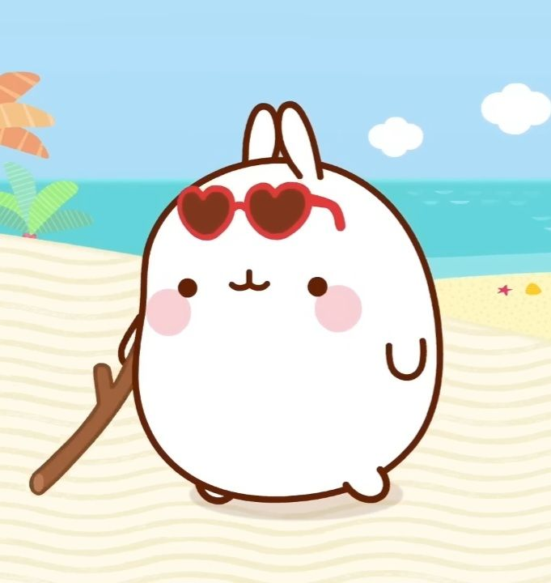
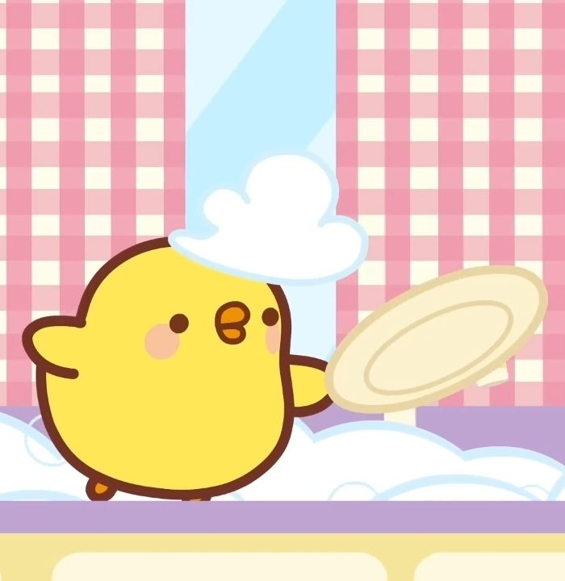

Molang is a white rabbit that makes every moment of the duo's daily life a unique and wonderful moment, taking special care of each detail, and giving little things an unexpected fresh taste. Molang puts its heart into everything it does, even when it gets it and its friend, Piu Piu, into trouble.

Piu Piu is a little yellow chick. Shy, reserved, and someone who dislikes being the center of attention, it takes great care to keep things under control. When something unexpected arises, Piu Piu can be quickly destabilized.